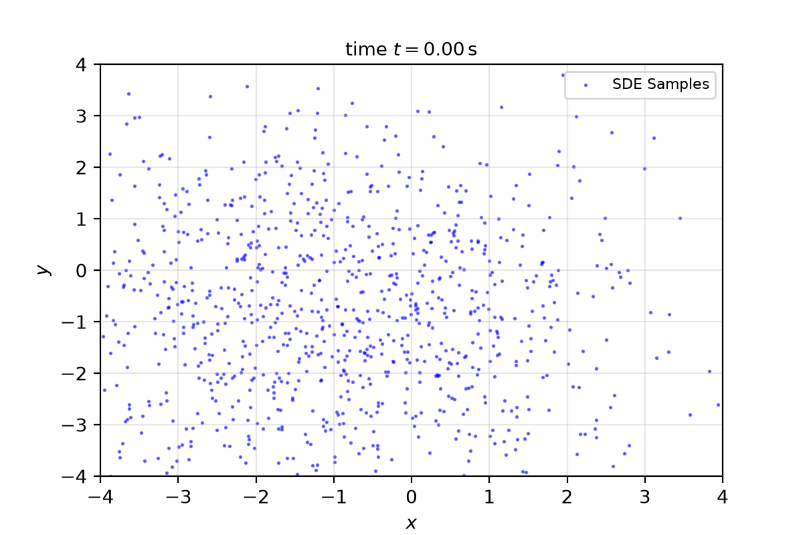
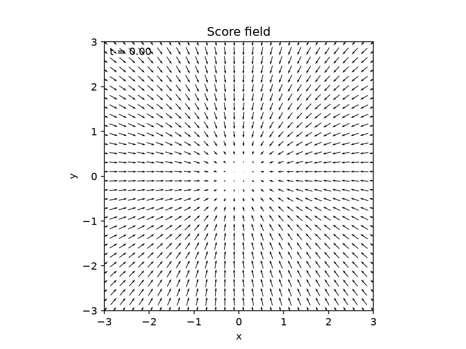

Title: Score-Based Physics-Informed Neural Networks for High-Dimensional Fokker-Planck Equations
Authors: Hu, Zhang, Karniadakis, Kawaguchi
Year: 2024
Show
import torchimport torch.optim as optimimport torch.nn as nnfrom torch.utils.data import TensorDataset, DataLoaderimport numpy as npfrom tqdm.notebook import tqdmfrom matplotlib import pyplot as pltfrom matplotlib.animation import FuncAnimation, PillowWriterfrom IPython.display import HTML, display
Score-PINN
The score-PINN is a neural network that takes \(\textbf{x},t\) and returns \(\nabla_x\log p_t(\textbf{x})\). We call it \(\textbf{s}_\theta\) and to train it we work on the optimization problem: Denoising Score Matching\[
\max_{t}\mathbb{E}_{\textbf{x}\sim\textrm{SDE}, \textbf{z}_\varepsilon\sim\mathcal{N}\left(\textbf{0},\varepsilon\textrm{Id}\right)}\left[\left\|\textbf{s}_\theta\left(\textbf{x} + \textbf{z}_\varepsilon,t\right) + \frac{\textbf{z}_\varepsilon}{\varepsilon}\right\|^2\right]
\] So to compute the loss function, we need a SDE simulator of: \[
\textrm{d}\textbf{X}_t = \textbf{f}\textrm{d}t + \sigma\textrm{d}\textbf{W}_t
\] In this experiment we use Euler-Maruyama scheme: \[
\textbf{X}_{n+1} = \textbf{X}_n + \textbf{f}_n\Delta t + \sigma_{n}\Delta\textbf{W}_n
\] where \(\Delta \textbf{W}_n\sim\mathcal{N}\left(0,\Delta t\textrm{Id}\right)\).
Denoising Score Matching
A work of [1] shows that for all \(t\) the score-matching minimizes: \[
\mathbb{E}_{\textbf{x}\sim\textrm{SDE}}\left[\frac12\left\|\textbf{s}_\theta\left(\textbf{x},t\right)\right\|^2 + \nabla_\textbf{x}\cdot\textbf{s}_\theta\left(\textbf{x},t\right)\right]
\] The minimum value is the opposite of the Fisher information \(\mathbb{E}\left[\frac12\left\|\nabla_\textbf{x}\log p(x)\right\|^2\right]\).
In high-dimensional case, the computation of the divergence is expensive. So in the paper [2] the authors introduce the denoising score matching like a simple way to simplify this computation. At first we use the ralation: \[
\begin{align*}
\nabla_{\tilde{\textbf{x}}}\log q_\varepsilon\left(\tilde{\textbf{x}}\middle| \textbf{x}\right) = -\frac{\tilde{x}-x}{\varepsilon}=-\frac{z_\varepsilon}{\varepsilon}
\end{align*}
\] where \(q_\sigma\left(\tilde{\textbf{x}}\middle| \textbf{x}\right)\) is the gaussian multivariate density with standard deviation \(\sigma\). \[
\begin{align*}
\mathbb{E}_{\textbf{x}\sim\textrm{SDE}, \textbf{z}_\varepsilon\sim\mathcal{N}\left(\textbf{0},\varepsilon\textrm{Id}\right)}\left[\frac12\left\|\textbf{s}_\theta\left(\textbf{x} + \textbf{z}_\varepsilon,t\right) + \frac{\textbf{z}_\varepsilon}{\varepsilon}\right\|^2\right] &= \mathbb{E}_{\textbf{x}\sim\textrm{SDE}, \textbf{z}_\varepsilon\sim\mathcal{N}\left(\textbf{0},\varepsilon\textrm{Id}\right)}\left[\frac12\left\|\textbf{s}_\theta\left(\textbf{x} + \textbf{z}_\varepsilon,t\right)\right\|^2+\textbf{s}_\theta\left(\textbf{x} + \textbf{z}_\varepsilon,t\right)\cdot\frac{\textbf{z}_\varepsilon}{\varepsilon}+\frac12\left\|\frac{\textbf{z}_\varepsilon}{\varepsilon}\right\|^2\right] \\
&= \mathbb{E}_{q_{\varepsilon}\left(\tilde{\textbf{x}}\middle|\textbf{x}\right)}\left[\frac12\left\|\textbf{s}_\theta\left(\tilde{\textbf{x}},t\right)\right\|^2+\textbf{s}_\theta\left(\tilde{\textbf{x}},t\right)\cdot\frac{\tilde{\textbf{x}}-\textbf{x}}{\varepsilon}+\frac12\left\|\frac{\tilde{\textbf{x}}-\textbf{x}}{\varepsilon}\right\|^2\right] \\
&= \mathbb{E}_{q_{\varepsilon}\left(\tilde{\textbf{x}}\middle|\textbf{x}\right)}\left[\frac12\left\|\textbf{s}_\theta\left(\tilde{\textbf{x}},t\right)\right\|^2+\textbf{s}_\theta\left(\tilde{\textbf{x}},t\right)\cdot\frac{\tilde{\textbf{x}}-\textbf{x}}{\varepsilon}\right] + \mathcal{O}_p\left(n\varepsilon^{-1}\right)\\
\mathbb{E}_{q_{\varepsilon}\left(\tilde{\textbf{x}}\middle|\textbf{x}\right)}\left[-\textbf{s}_\theta\left(\tilde{\textbf{x}},t\right)\cdot\nabla_{\tilde{\textbf{x}}}\log q_\varepsilon\left(\tilde{\textbf{x}}\middle| \textbf{x}\right)\right] &= -\int \textrm{d}\tilde{\textbf{x}}q_{\varepsilon}\left(\tilde{\textbf{x}}\middle|\textbf{x}\right)\textbf{s}_\theta\left(\tilde{\textbf{x}},t\right)\cdot\nabla_{\tilde{\textbf{x}}}\log q_\varepsilon\left(\tilde{\textbf{x}}\middle| \textbf{x}\right)\\
&= -\int \textrm{d}\tilde{\textbf{x}}\textbf{s}_\theta\left(\tilde{\textbf{x}},t\right)\cdot\nabla_{\tilde{\textbf{x}}} q_\varepsilon\left(\tilde{\textbf{x}}\middle| \textbf{x}\right)\\
&= \int \textrm{d}\tilde{\textbf{x}}q_\varepsilon\left(\tilde{\textbf{x}}\middle| \textbf{x}\right)\nabla_{\tilde{\textbf{x}}}\cdot\textbf{s}_\theta\left(\tilde{\textbf{x}},t\right) - \int_{\partial\mathbb{R}^n} \textrm{d}S\left(\tilde{\textbf{x}}\right)q_\varepsilon\left(\tilde{\textbf{x}}\middle| \textbf{x}\right)\left(\textbf{s}_\theta\left(\tilde{\textbf{x}},t\right)\cdot\textbf{n}\right)\\
&= \mathbb{E}_{q_\varepsilon\left(\tilde{\textbf{x}}\middle| \textbf{x}\right)}\left[\nabla_{\tilde{\textbf{x}}}\cdot\textbf{s}_\theta\left(\tilde{\textbf{x}},t\right)\right]
\end{align*}
\] where we use the assumption that \(q_\varepsilon\left(\tilde{\textbf{x}}\middle| \textbf{x}\right)\ll\textbf{s}_\theta\left(\tilde{\textbf{x}},t\right)\) as \(\left\|\tilde{\textbf{x}}\right\|\to\infty\). So: \[
\begin{align*}
\mathbb{E}_{\textbf{x}\sim\textrm{SDE}, \textbf{z}_\varepsilon\sim\mathcal{N}\left(\textbf{0},\varepsilon\textrm{Id}\right)}\left[\frac12\left\|\textbf{s}_\theta\left(\textbf{x} + \textbf{z}_\varepsilon,t\right) + \frac{\textbf{z}_\varepsilon}{\varepsilon}\right\|^2\right] = \mathbb{E}_{q_\varepsilon\left(\tilde{\textbf{x}}\middle| \textbf{x}\right)}\left[\frac12\left\|\textbf{s}_\theta\left(\tilde{\textbf{x}},t\right)\right\|^2+\nabla_{\tilde{\textbf{x}}}\cdot\textbf{s}_\theta\left(\tilde{\textbf{x}},t\right)\right] + \mathcal{O}_p\left(n\varepsilon^{-1}\right)\\
\lim_{\varepsilon\to0} \mathbb{E}_{q_\varepsilon\left(\tilde{\textbf{x}}\middle| \textbf{x}\right)}\left[\frac12\left\|\textbf{s}_\theta\left(\tilde{\textbf{x}},t\right)\right\|^2+\nabla_{\tilde{\textbf{x}}}\cdot\textbf{s}_\theta\left(\tilde{\textbf{x}},t\right)\right] = \mathbb{E}_{\textbf{x}\sim\textrm{SDE}}\left[\frac12\left\|\textbf{s}_\theta\left(\textbf{x},t\right)\right\|^2+\nabla_{\textbf{x}}\cdot\textbf{s}_\theta\left(\textbf{x},t\right)\right]
\end{align*}
\] So we know that for each optimization problem the loss function converges to the ideal loss function. In other words, it is like an Asymptotic Preserving property. Howevere, we have to remark that the theoretical optimal solution of the relaxation problem converges to the limit solution (the pure score-matching), in the case of the PINN (vanilla approach) the target’s noise diverges. So the quality of the training and the optimal theoretical PINN does not converges to the optimal theoretical PINN of the limit loss.
In this implementation we have to compute the score for each frame. Here the following loss is implemented: \[
\mathbb{E}_{p(t)q_\varepsilon\left(\tilde{\textbf{x}}\middle|\textbf{x}\right)}\left[\frac12\left\|\textbf{s}_\theta\left(\textbf{x} + \textbf{z}_\varepsilon,t\right) + \frac{\textbf{z}_\varepsilon}{\varepsilon}\right\|^2\right]
\]
def drift_function(x: torch.Tensor, t: torch.Tensor):# x shape (N,d)if x.ndim ==1: x = x.unsqueeze(0)# t shape (N,)if t.ndim ==0: t = t.unsqueeze(0)return-4* (torch.sum(x**2, dim=-1, keepdim=True) -1) * xdef sigma_function(x: torch.Tensor, t: torch.Tensor):# x shape (N,d)if x.ndim ==1: x = x.unsqueeze(0)# t shape (N,)if t.ndim ==0: t = t.unsqueeze(0) N, d = x.shapereturn1.5*torch.eye(d, device=x.device).repeat(N, 1, 1)def euler_maruyama_sampler(x_init: torch.Tensor, t_init: float, t_final: float, n_steps: int): dt = (t_final - t_init) / n_steps x_samples = torch.empty((n_steps, *x_init.shape), device=x_init.device) t_samples = torch.linspace(t_init, t_final, n_steps, device=x_init.device) dW = torch.randn((n_steps, *x_init.shape), device=x_init.device) * torch.sqrt(torch.tensor(dt)) x = x_init.detach().clone()for i inrange(n_steps): x_samples[i] = x drift = drift_function(x, t_samples[i]) sigma = sigma_function(x, t_samples[i]) x = x + drift * dt + (sigma @ dW[i].unsqueeze(-1)).squeeze(-1)return x_samples, t_samples

Training loop
def train_score_network(score_net, x_init, t_init, t_final, n_steps, epochs=50, lr=1e-3, noise_std=0.1, batch_size=4096): optimizer = optim.Adam(score_net.parameters(), lr=lr)# 1. Generazione Dati SDE x_samples, t_samples = euler_maruyama_sampler(x_init, t_init, t_final, n_steps) n_steps_total, N, d = x_samples.shape# Flattening x_train = x_samples.reshape(-1, d) t_train = t_samples.repeat(N, 1).T.reshape(-1, 1)# Inseriamo i dati in un Dataset e usiamo il DataLoader per dividerli in batch dataset = TensorDataset(x_train, t_train)# shuffle=True è cruciale per mescolare i frame temporali ed evitare che la rete veda solo t=0 o t=5 in sequenza! dataloader = DataLoader(dataset, batch_size=batch_size, shuffle=True) score_net.train() epoch_bar = tqdm(range(epochs))for epoch in epoch_bar: epoch_loss =0.0# Iteriamo su tutti i mini-batchfor batch_x, batch_t in dataloader: optimizer.zero_grad()# Calcoliamo la loss SOLO sul mini-batch (es. 4096 campioni) loss = score_matching_loss(score_net, batch_x, batch_t, noise_std) loss.backward() optimizer.step() epoch_loss += loss.item()# Calcoliamo la loss media dell'epoca avg_loss = epoch_loss /len(dataloader) epoch_bar.set_description(f"Epoch {epoch+1}/{epochs}, Loss: {avg_loss:.6f}")return score_netdim =2# Dimensione spaziale (d)N =4096# Numero di particelle simulaten_steps =200# Passi temporalit_init =0.0t_final =3.0# Inizializziamo le particelle (N, d)x_init = torch.randn(N, dim)*0.5# Inizializziamo la retescore_net = ScoreNetwork(spatial_dim=dim, hidden_dim=256)# Avviamo l'addestramento!trained_net = train_score_network( score_net, x_init, t_init, t_final, n_steps, epochs=50, noise_std=0.1, lr=1e-3)# save the modeltorch.save(trained_net.state_dict(), "score_network.pth")

Score-PINN idea
The authors insert the evolution of the score by using the FPE as follows: \[
\begin{align*}
\partial_t \textbf{s} &= \partial_t \nabla_\textbf{x} \log u(\textbf{x},t) \\
&= \nabla_\textbf{x} \partial_t \log u(\textbf{x},t) \\
&= \nabla_\textbf{x} \left[\frac{\partial_t u(\textbf{x},t)}{u(\textbf{x},t)}\right] \\
&= \nabla_\textbf{x} \left[\frac{\nabla_\textbf{x}\cdot\left(u\left(\textbf{w}+\frac12\Sigma \textbf{s}\right)\right)}{u}\right] \\
&\text{where $\textbf{w}=-\textbf{f}+\frac12\nabla_\textbf{x}\cdot\Sigma$}\\
&= \nabla_\textbf{x} \left[\frac{\nabla_\textbf{x}u\cdot\left(\textbf{w}+\frac12\Sigma \textbf{s}\right)+u\nabla_\textbf{x}\cdot\left(\textbf{w}+\frac12\Sigma \textbf{s}\right)}{u}\right] \\
&= \nabla_\textbf{x} \left[\textbf{s}\cdot\left(\textbf{w}+\frac12\Sigma \textbf{s}\right)+\nabla_\textbf{x}\cdot\left(\textbf{w}+\frac12\Sigma \textbf{s}\right)\right]
\end{align*}
\]
References
[1]
A. Hyvärinen, “Estimation of non-normalized statistical models by score matching,”Journal of Machine Learning Research, vol. 6, no. 24, pp. 695–709, 2005, Available: http://jmlr.org/papers/v6/hyvarinen05a.html
[2]
P. Vincent, “A connection between score matching and denoising autoencoders,”Neural Computation, vol. 23, no. 7, pp. 1661–1674, Jul. 2011, doi: 10.1162/NECO_a_00142.